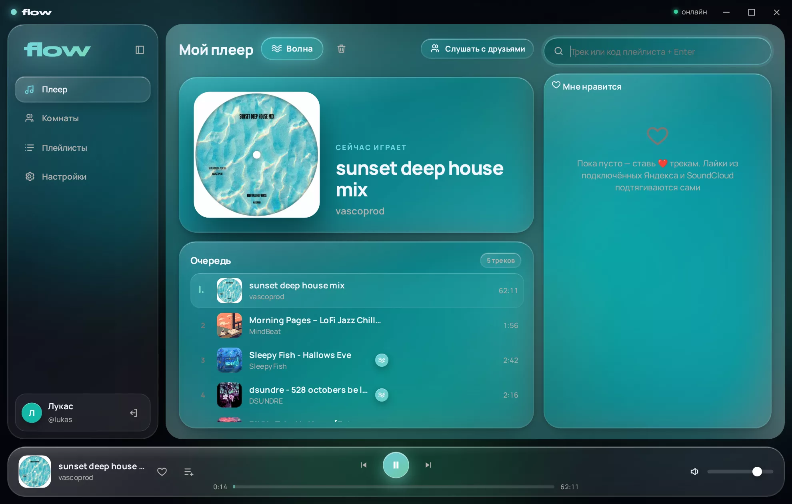

Слушайте музыку вместе — секунда в секунду
Создай комнату, скинь другу код — и трек зазвучит у всех одновременно. Общий плейлист, чат и «Моя волна», которая сама подбирает музыку.

Всё, что нужно для совместного прослушивания
Никаких «три, два, один — жмём плей». Flow сверяет часы с сервером и подстраивает звук, пока вы слушаете.
Синхронно до миллисекунд
Расхождение между друзьями — считанные миллисекунды. Перемотка и пауза — сразу у всех.
Комнаты по коду
Шесть символов — и друг в комнате. Владелец может закрыть управление, выгнать или удалить комнату.
Название + Enter
Пишешь трек — Flow сам находит лучшую версию и ставит в очередь. Каверы и ремиксы — только если попросишь.
Моя волна
Включи — и очередь не кончается: треки подбираются под то, что вы слушаете.
Твои лайки
Подключи Яндекс Музыку или SoundCloud и перенеси лайки в избранное одной кнопкой.
И просто плеер
Без комнаты — обычный плеер с очередью, волной и медиаклавишами клавиатуры.
Комната — как общий диван
Каждый добавляет свои треки, все видят, кто что поставил, и болтают в чате.

- 👥Общий плейлист
Добавляй, двигай и убирай треки — изменения видны всем мгновенно.
- 💬Чат со смайликами
Обсуждайте прямо в комнате — с аватарками, гифками и крупными эмодзи.
- 🎨Жидкое стекло
Интерфейс подстраивает цвета под обложку трека. Или выбери палитру по вкусу.
- ⌨️Медиаклавиши
Fn+F7/F8/F9 — назад, пауза, вперёд. Работает и в свёрнутом окне.
Как начать
Скачай и установи
Установщик ставит Flow в один клик. Дальше обновления приходят сами — кнопкой в окне.
Создай аккаунт
Логин и пароль — всё. Друзья увидят твоё имя и аватарку.
Позови друзей
Создай комнату и отправь код. Как только друг зайдёт — слушаете вместе.
Windows может показать «Система Windows защитила ваш компьютер» — у Flow пока нет платной цифровой подписи. Нажми «Подробнее» → «Выполнить в любом случае».